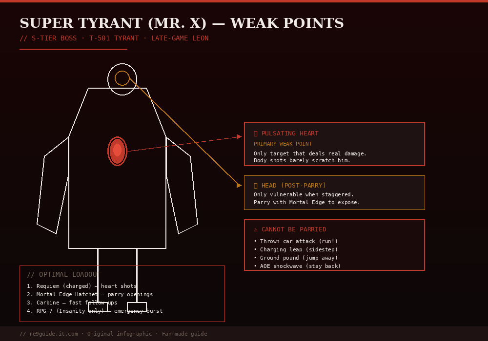

How to Beat Super Tyrant (Mr. X) in Resident Evil Requiem
PUBLISHED MAY 2026 · 9 MIN READ · DIFFICULTY: ★★★ HARD · SPOILERS AHEAD
⚠ SPOILER LEVEL: HIGH
EDITOR:Jachin (Seoul)
GAME VERSION:v1.02 (May 2026 patch)
LAST VERIFIED:2026-05-10
PLATFORM TESTED:PS5 / Steam
Mr. X — officially Tyrant T-501 — is one of Resident Evil Requiem's most iconic boss encounters. This complete guide covers the RPD chase sequence, the Super Tyrant boss fight, weak points, parry strategy, and Insanity difficulty tips. If you've been one-shot by a thrown car, this guide is for you.

Fig 1. Super Tyrant weak points — heart shots are the only way to deal real damage. Body shots barely scratch him.
Long-time Resident Evil fans will recognize Mr. X immediately. After Leon reunites with Grace Ashcroft in Raccoon City, the bald-headed monstrosity bursts through the walls of the Raccoon City Police Department, called in by Zeno as reinforcements. He barely has time to put on his hat before engaging Leon in a deadly chase straight out of RE2.
The encounter has two distinct stages: a chase sequence inside the RPD where Mr. X cannot be killed, and a full Super Tyrant boss fight outside the precinct near the Basketball Court. Confusing the two will get you killed. The chase requires zero ammo. The boss fight requires every heavy weapon you've got.
⚠ Critical warning: Do not waste a single bullet during the chase. Mr. X cannot be killed in this form. He absorbs gunfire like a sponge, and his punches deal catastrophic damage. Run, don't fight.
// EXACT PATHING TO SURVIVE
When Tyrant T-501 shatters the precinct wall, follow this exact route:
Turn around immediately and run back the way you came. Head through the hole in the wall and turn right.
Mr. X punches through the next wall before you can reach the door. Loop around him and proceed through the new hole he just made.
Head up the collapsed staircase and through the corridor ahead.
When a steel beam suddenly bursts through the wall, immediately quick-turn and sprint back the way you came. Touching this beam is instant death.
Duck into the side room on the left. Mr. X will burst through again — use the rubble pile in the center of the room to kite him.
Walk Mr. X around the circular debris pile. When he commits to a swing, sprint past his blind side back toward the main lobby.
Follow the small light sources on the floor — they guide you to the exit. Burst through the doors and leave the precinct behind.
If he corners you at any point, a single Requiem revolver headshot will briefly stun him for about two seconds. Use that window to slip past his shoulders and keep moving. Headshot only — body shots do nothing.
Pre-fight preparation: The Kendo safe zone
Surviving the chase drops you into the alleyways behind Gun Shop Kendo. Do not rush through this area. This is a designated safe zone designed specifically to let you prep for the actual boss fight.
Before stepping into the open lot, do the following:
Visit Kendo's stash box. If you've been hoarding heavy rifle ammo, sniper rounds, or Requiem bullets, pull them into your active inventory now.
Repair Leon's body armor. The upcoming fight features massive area-of-effect damage. Going in with broken armor is a fatal mistake.
Check the Basketball Court on the right before entering the main lot. It contains hidden healing items and ammo pickups.
Equip the Eye Spy Charm if you have it. The charm gives you a random chance to survive fatal damage — a literal lifesaver against a Super Tyrant.
Sharpen and equip the Hatchet. A fully upgraded Hatchet has a more forgiving parry window and is essential for this fight.
💡 Recommended loadout: Requiem Revolver (heart shots), MSBG 500 Shotgun (close-range pressure), Marksman 1A Sniper (heart shots from range), and a fully upgraded Hatchet for parries. Bring 2+ First Aid Sprays.
Super Tyrant boss fight (Phase 2)
The moment you step into the open lot, Mr. X opens the fight by hurling missiles from a nearby rooftop. The explosions cover the arena in lingering fire. He then leaps down, sheds his iconic coat, and mutates into his final Super Tyrant form. The arena is completely open — no cover, no hiding. You must stand your ground and master the parry mechanic.
// ATTACK PATTERN OVERVIEW
The Super Tyrant has four primary attacks:
Charging attack — closes distance fast. Tracking is highly accurate. Parry with Hatchet (L1) just before impact, or sidestep at the last moment.
Wide punch combo — close-range melee. Parry every swing with the Hatchet. Successful parries stun him briefly.
Diving attack from cars — when he leaps onto a ruined car, expect a flying body slam. Cannot be parried. Move laterally the instant his feet leave the ground.
Thrown car — if he walks behind a vehicle and digs his hands into the metal, drop everything and sprint horizontally. Cannot be parried. One direct hit removes most of your health.
// PARRY THESE
Charges and wide punches only. Parry window is generous on a max-level Hatchet.
// RUN FROM THESE
Thrown cars and diving leap attacks. No exceptions.
Weak point: Aim for the heart
The Super Tyrant has one obvious weak point — a massive pulsating heart exposed in the center of his chest. Shooting him anywhere else is a complete waste of ammunition. Heart shots deal roughly 5-6x the damage of body shots.
// OPTIMAL DAMAGE STRATEGY
Watch for the pre-attack pause. Mr. X freezes for a half-second before every attack — this is your reliable shooting window.
Land 2-3 shots, then disengage. Don't try to line up a fourth shot — he'll close the distance and punish you.
Parry his charge → shoot his heart while staggered. A successful parry creates a 2-3 second stun window. Empty your shotgun or Requiem into his exposed heart during this time.
When he leaps onto a car, use the brief pause to land direct heart shots before he dives.
Watch for the QTE prompt. When he kneels after sufficient heart damage, a Hatchet finisher prompt appears. Press it immediately to drive the Hatchet into his heart for a massive damage burst.
Repeat the parry → shoot heart → finisher cycle until Mr. X drops permanently. The fight typically takes 4-6 minutes on Standard difficulty with a properly upgraded loadout.
Insanity difficulty tips
⚠ On Insanity, Mr. X is one of the toughest fights in the game. Damage scales roughly 3x — a single thrown car or charge will one-shot Leon if you take it head-on.
Key Insanity-specific adjustments:
Mortal Edge Hatchet is mandatory. The default Hatchet's parry window is too tight on Insanity. If you haven't completed The Commander fight in the ARK to get Mortal Edge, this is incredibly difficult.
Heart HP scales up — expect to land roughly 2x the heart shots compared to Standard. Bring more Requiem rounds.
Use Infinite Ammo if unlocked. Cheats do NOT void trophies. The Infinite Requiem trivializes this fight on Insanity.
Body armor breaks faster. Pre-fight armor repair at Kendo's stash is non-negotiable.
Pre-position before the missile barrage. The opening rooftop missiles deal severe damage on Insanity. Sprint to a safe spot the moment the fight starts.
Rewards and what comes next
Defeating the Super Tyrant unlocks:
"I Remember That, Too" trophy — Bronze, your reward for putting down a classic enemy.
Path to the Orphanage — story progression continues.
Resource pickups in the arena — sweep the lot for ammo and healing items before continuing.
From here, the story leads through the Orphanage and into Blackthorn Station, where you'll face Plant 43 at the entrance to the ARK. After that, The Commander and Victor Gideon await — the toughest fights of the game.